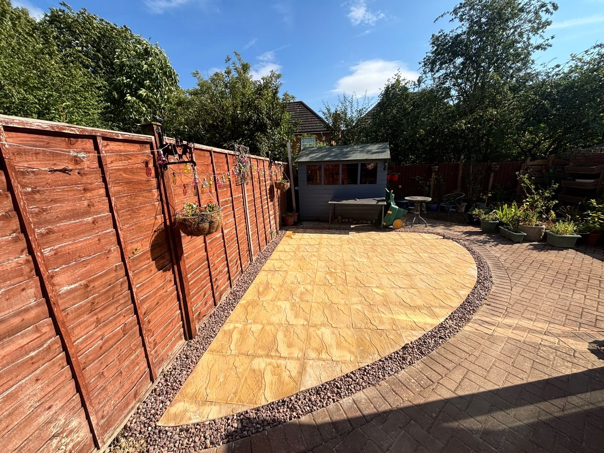
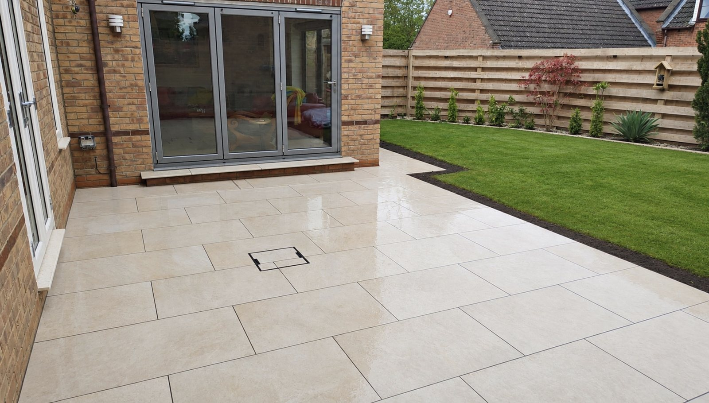

Our projects
What the brief was, what we built, and the materials that went into it.
Recent completed jobs
Every project page shows what the brief was, what we built, and the materials that went into it — because "trust us" is not a specification. New projects are added as they complete; over time this page becomes a map of our work across the county.

Block paved driveway and dropped kerb, Ryhall
Slabs and an old crossing replaced with a three-car block drive, channel drain and wider dropped kerb.

Charcoal block paved driveway, Oakham
A full-width charcoal herringbone drive with channel drains, built after a garage conversion at the same house.

Buff herringbone driveway, Oakham
An extra space beside a townhouse drive, in buff herringbone with a charcoal double border.

Block paved parking bay, Oakham
A tarmac drive widened with a herringbone block bay and a curved soldier-course edge.

Indian sandstone patio, Weldon
Multi-tone sandstone in a walled garden, with a curved raised edge and a pebble margin.

Riven-effect patio, Oakham
A buff riven patio with a curved edge, set into a block paved garden and framed in plum chippings.

Porcelain patio, Stamford
Large-format porcelain outside bifold doors, wrapping round the side of the house as a path.

Resin driveway, Stamford
Cracked concrete replaced with golden Vuba resin and granite sett edging at a stone townhouse.

Garden transformation, Oakham
A sloping, unused back garden rebuilt with sleeper terracing, porcelain, lawn and planting.

Porcelain patio, Uppingham
A tired slab terrace replaced with large-format porcelain, raised beds and lighting.
The kind of finish we build


Rated 5.0 from 37 Google reviews
“We’re absolutely delighted with our new patio from Rutland Driveways & Landscaping. We contacted Lewis to build our new patio after a personal recommendation; we cannot speak highly enough of the workmanship of his team and the level of service that Lewis provides. …”
Danny, Oakham · Porcelain patio — Google review
“rutland driveway recently completed our resin driveway in Stamford. The team were great from the start. at first they done an AI mock up for us and we got to change colours etc until we were happy, then the final product looked even better!”
Victor, Stamford · Resin driveway — Google review
Want your project here next?
Spring and summer slots book up through winter. The earlier we visit, the better your dates.